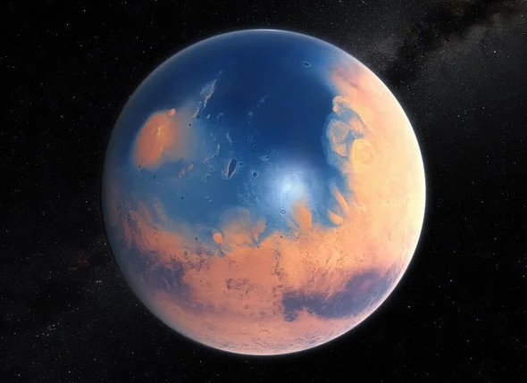

Global Warming
Global warming is a problem that has affected everyone in some way. it has caused rising sea
levels and higher global temperture, but is this normal? is this actually something to talk about,
or is this another thing to just throw in the trash and worry about something else? well, it's kinda
both. Earth has been through much worse conditions in its lifetime. For example, during the Cambrian
Explosion 14 million years ago, CO2 levels were at 4,000 parts per million (ppm), while we are at 416.61
ppm. However, this doesnt excuse the fact that this is bad, as this is the highest its been since the
Cambrian Explosion. Humans have come accustomed to thing such as burning fuel, landfills and harmful
plants and factories over the past few decades, which have caused a spike in CO2 and CO in the
atmosphere. while CO doesnt directly cause climate change and things like that, it creates methane and
ozone which do. efforts such as electric cars, solar and wind power plants, dams, and nuclear power
plants are ways to limit the pollution of the atmosphere, halting global warming and even slightly
reducing it. my favorite type is nuclear, as it is the cleanest one and does a great job at producing
power. although it is expensive, it is a great choice for clean energy. dams are also good, and so is
solar energy. i'm not a fan of wind energy since although light is garunteed in almost all habitable
places, wind isn't. In conclusion, although we are taking many good steps forward to help the enviorment,
we have a long way to go before we have gotten rid of all the harmful things.
Light Pollution
light pollution is what causes our skies to be completely black, without any stars to look at. it is when
alot of light is deflected into the skies. car lights, street lights, and the lights on the Las Vegas
strip are all things that contribute to light pollution. when you have alot of light in the atmosphere,
it outshines the stars, preventing them from being visible. this not only gets rid of the beautiful
that humans have been looking at for centuries, it also harms other animals' navigation. many birds and
fish use the stars to see where it needs to go, and these lights can hide the stars and create fake ones
that will lead them to death. scientists rate light pollution on a class scale that ranks 1, being the
best, and 9, being the worst. there are only a few places on the earth that still have only a class 1
level, while most have much more. places in alaska, california, nevada, and Utah are a few states with
places that have class 1 light pollution. if we want to stop intense light pollution, warm colored LEDs
and CFLs should be used, since they dont deflect into the skies as much.
Earth vs. Mars
We have sent many rovers, landers, and orbiters to mars, and they have all been studying the
earth for decades, and don't plan on stopping, battery permitting. One thing we found is evidence
of past water, which have led us to believe that mars had plenty of water hundreds of millions of
years ago. we think that there was a thick atmosphere with a strong magnetic field, but decayed
after constant sun damage. there used to be many lakes and oceans, that have now dried up. it
used to be like earth, water everywhere. some speculate that this is how earth is going to end
up, and as the atmosphere keeps decaying due to human influence, it seems more and more likely.
